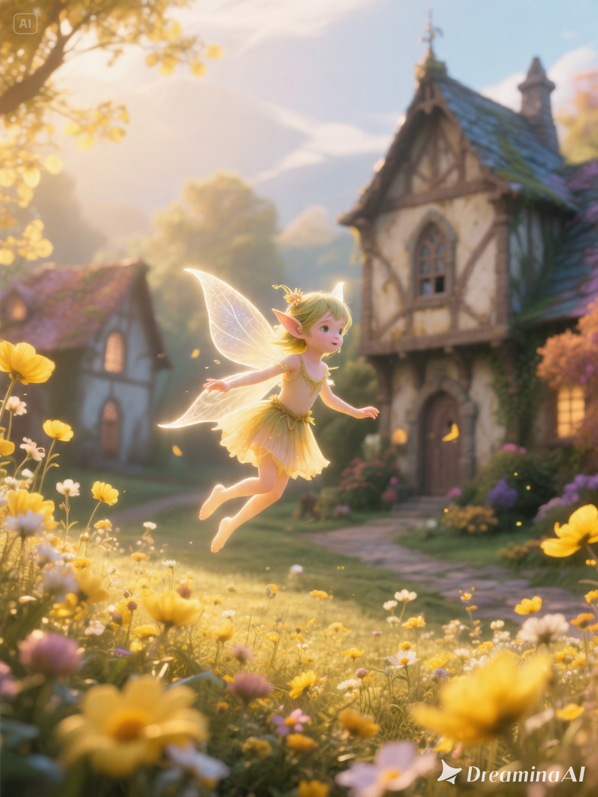

園丁擔當（比劫）
- 性格特色
- 主動、坦率、直接、豪氣，喜歡事情快節奏推進，也喜歡掌握感。
- 如何靠近一個人
- 主動邀約、有話直說、熱情滿滿，也會豪爽照顧對方。
- 長期關係最重視
- 相處是否舒服自在，對方是否願意信任並依賴自己。
找出表格中每一句話的主人，誰找到最多人，就有機會得到小獎品。



這一段不是要你一次記很多，而是抓住三件事：你最容易被什麼吸引、你最常卡在哪、哪些反差會讓你後來反而被吸引。
不健康的反應是「因為我沒有，所以我好想要擁有」；比較健康的反應是「這個我也有，所以我不需要執著，我是純粹欣賞他」。
把圖改成直式閱讀後，手機上可以直接往下看，不需要縮放。
這裡看的是相處久了之後，哪些反差特質反而會慢慢變成吸引力。
直接看差異：每一種人在感情裡的節奏、靠近方式、長期在意點都不一樣。
先看自己最容易卡在哪裡，比較不會把慣性誤認成命中注定。
這不是第一眼的心動，而是相處久一點後，可能越看越有感的互補方向。